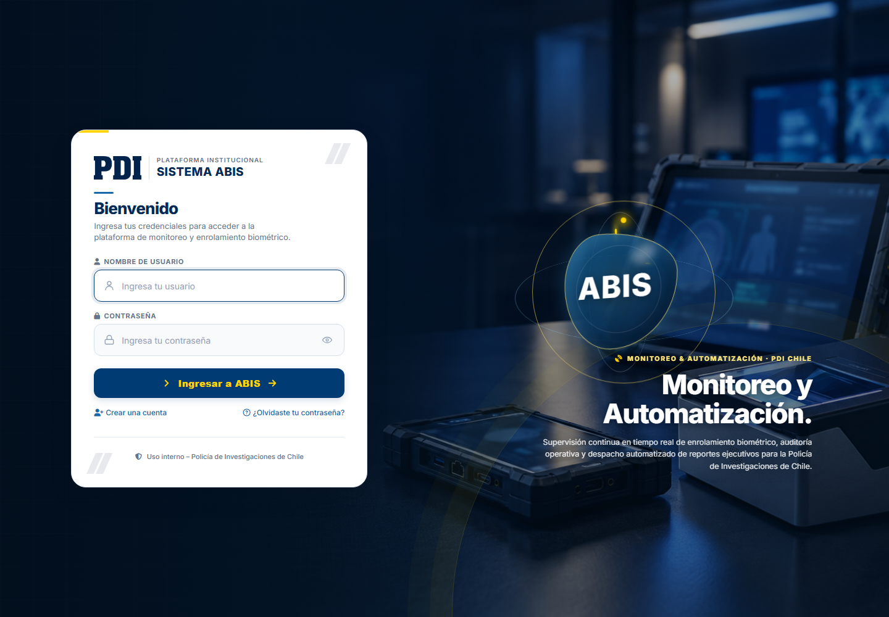
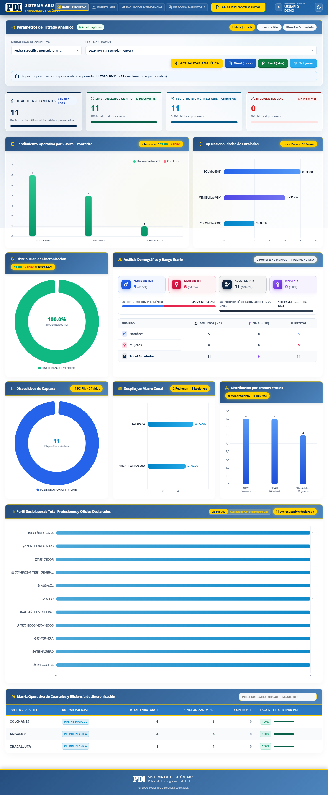
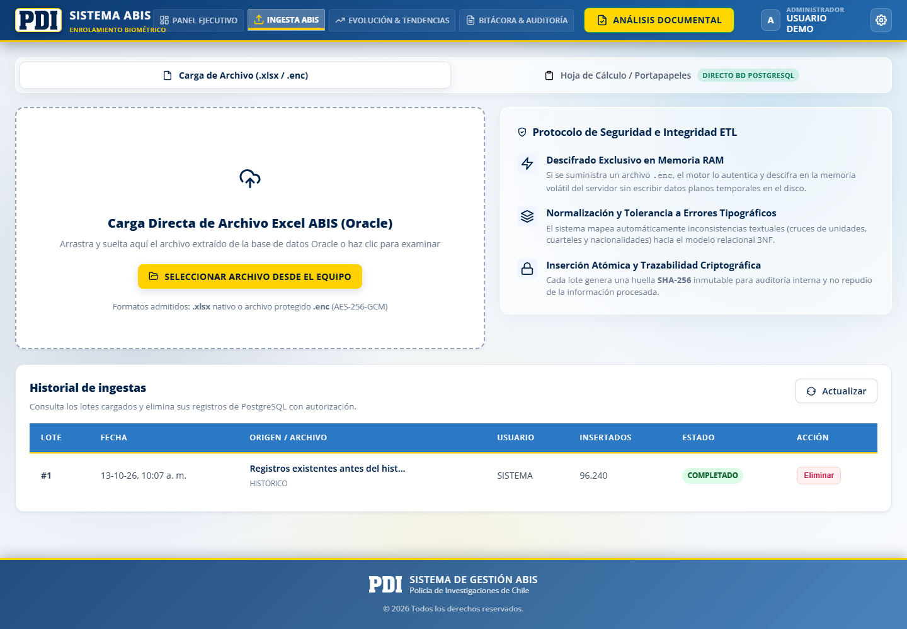
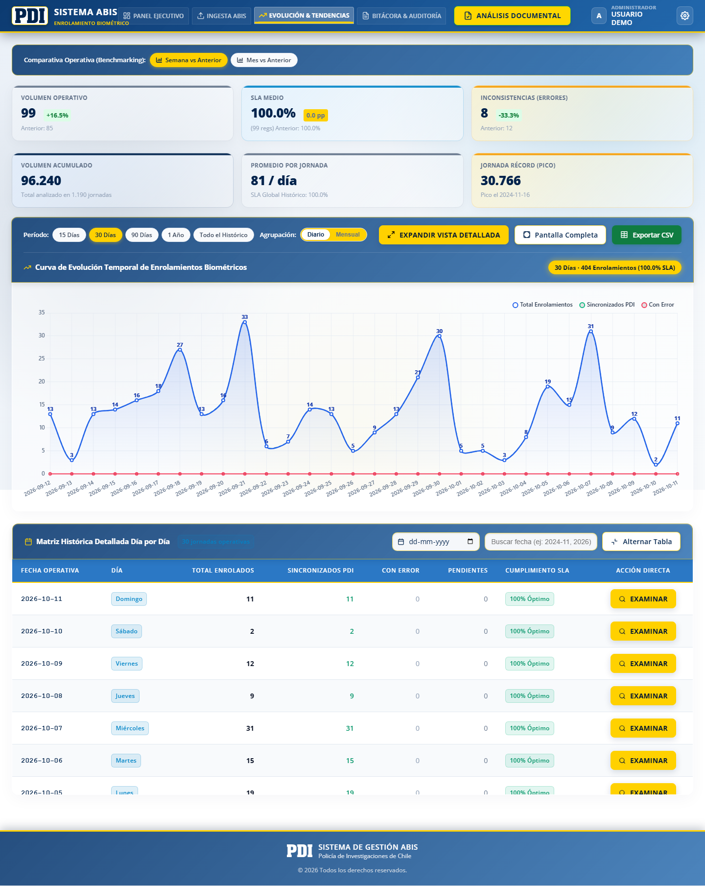
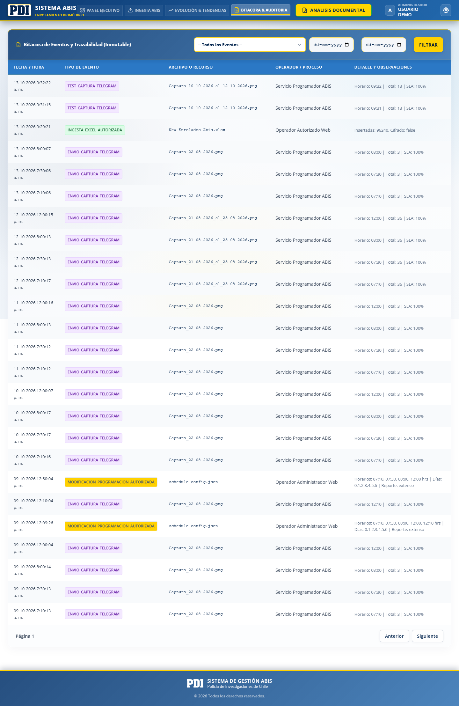
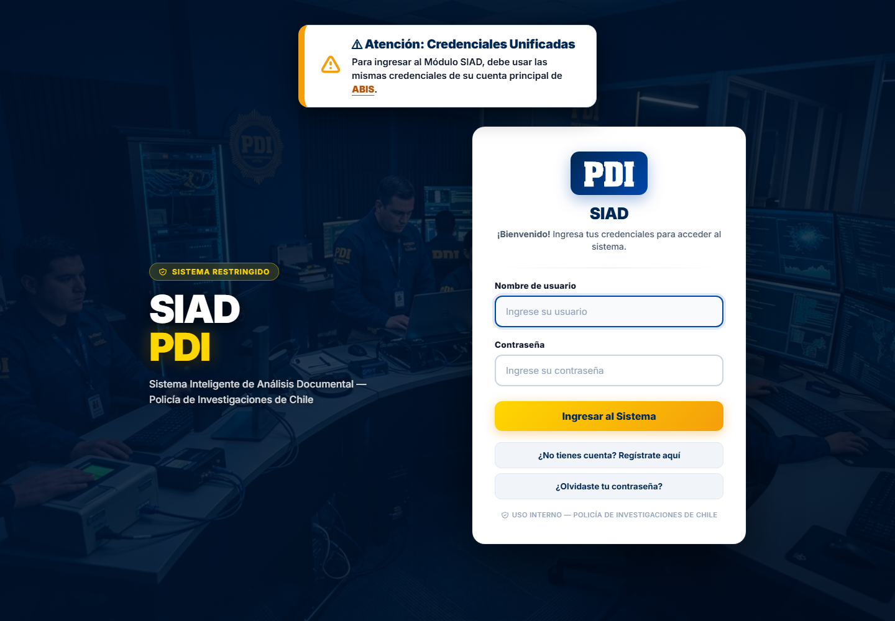
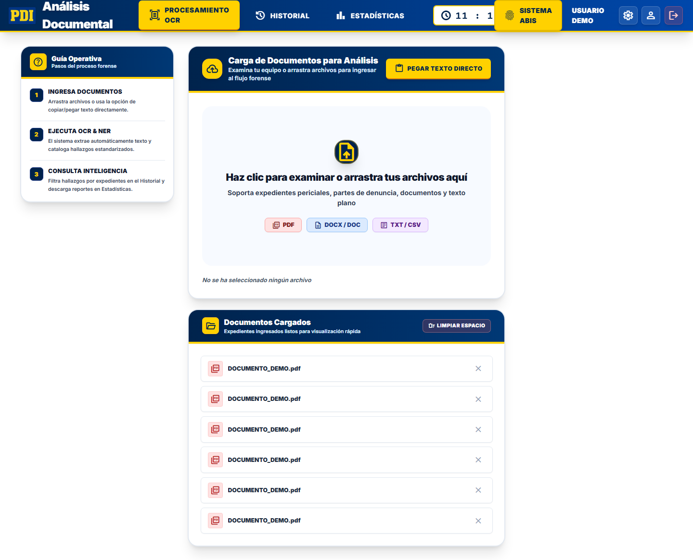
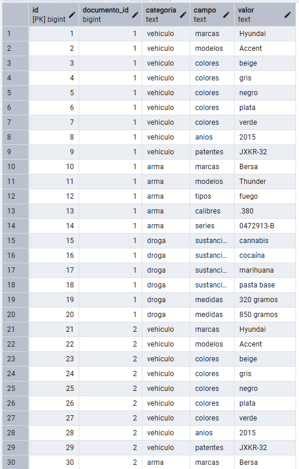
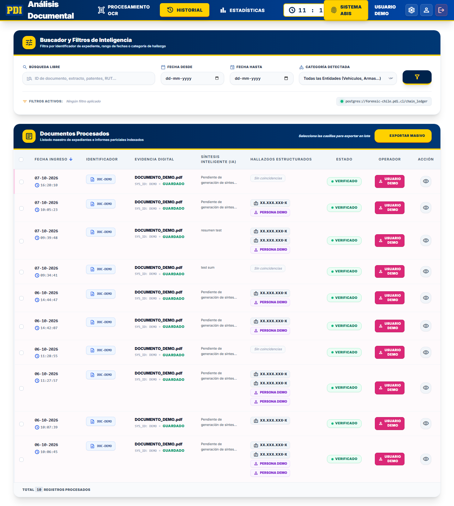
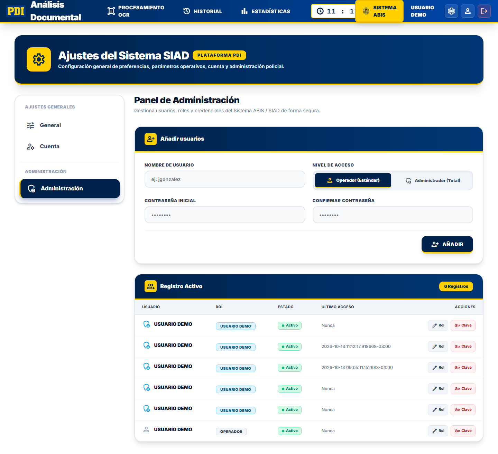

Plataforma Integrada
Ecosistema Unificado de Control Biométrico y Análisis Pericial
Presentación integral de la arquitectura, funcionamiento operativo de ABIS, modelo de conexión centralizado y capacidades de inteligencia documental de SIAD.
Sistema ABIS
Gestión Automatizada de Identificación y Enrolamiento Biométrico
Monitoreo en tiempo real del registro de extranjeros y ciudadanos en cuarteles policiales, sincronización PDI, auditoría operacional e ingesta de datos.
Acceso al Sistema ABIS
Sesión Criptográfica JWT
Autenticación protegida con cookie HTTP-Only, expiración automática y firma digital de servidor para evitar suplantaciones.
Control de Roles Policiales
Diferenciación estricta entre Administrador Policial (ajustes, auditoría, gestión de usuarios) y Operador.
Tablet e Interfaz 3D
Diseño visual institucional con representación 3D del dispositivo biométrico de captura oficial en terreno.

Clic para ampliarDashboard Ejecutivo ABIS
Consulta Multitemporal
Filtros instantáneos por Jornada Operativa Específica, Últimos 7 Días o Histórico Acumulado.
Sincronización con PDI
Control exacto de enrolamientos exitosos, registros sincronizados, pendientes y detección temprana de inconsistencias.
Rendimiento por Cuartel
Métricas geográficas desglosadas por Región Policial, Prefectura, Unidad y Cuartel operativo.

Clic para ampliarIngesta Masiva de Enrolamientos
Doble Canal de Entrada
Carga de archivos Excel (.xlsx) o copiado y pegado directo de planillas desde Oracle u hojas de cálculo.
Cifrado AES-256-GCM
Soporte para archivos protegidos .enc. Desencriptado en memoria sin dejar rastros en disco duro.
Trazabilidad e Historial
Historial de lotes con huella SHA-256, conteo de filas válidas/rechazadas y borrado controlado para administradores.

Clic para ampliarTendencias y Generación de Reportes
Evolución Temporal
Gráficos de dispersión y series de tiempo para evaluar la productividad de las brigadas y equipos (PC vs. Tablet).
Exportación Multi-Formato
Generación de reportes ejecutivos oficiales en Word (.docx), Excel (.xlsx), CSV y JSON.
Bot Institucional Telegram
Distribución automatizada y programada de minutas de enrolamiento a los teléfonos de la jefatura autorizada.

Clic para ampliarAuditoría y Gestión de Accesos
Bitácora de Auditoría Cifrada
Registro inmutable de cada exportación, inicio de sesión, cambio de rol o eliminación de lotes con IP y timestamp.
Panel de Administración
Creación de credenciales operativas, reseteo de claves y asignación de privilegios en tiempo real.
Protección contra Errores Críticos
Salvaguardas que impiden auto-eliminarse o dejar al sistema sin un administrador activo.

Clic para ampliar¿Cómo se unen ABIS y SIAD?
De dos aplicaciones independientes a una sola plataforma institucional
Integración full-stack que une la agilidad del backend Node.js con la potencia analítica de Python y la robustez de PostgreSQL.
Enlace Transparente entre Node.js y Python
Gateway Principal (Puerto 3000)
El usuario y la red solo ven una sola aplicación. Node.js recibe todas las solicitudes y sirve la interfaz general.
Reverse Proxy a SIAD (Puerto 5001)
Cuando el usuario navega a /analisis, Node.js canaliza de forma transparente las peticiones al motor Flask sin exponer puertos secundarios.
Navegación Fluida con un Clic
El botón "Sistema de Análisis" en la cabecera permite alternar entre monitoreo biométrico y análisis documental sin reiniciar sesión.
const target = "http://127.0.0.1:5001";
// Enrutamiento dinámico al proceso Python
proxyReq(target + req.url);
});
Base de Datos Unificada: Abis_OCR
Una Única Instancia PostgreSQL
Se consolidó la estructura eliminando bases de datos fragmentadas. Toda la información institucional reside en Abis_OCR.
Coexistencia Armónica
Tablas ABIS: registro_enrolamiento, catálogos geográficos, ingesta_lote y auditoría.
Tablas SIAD: documentos, entidades_* y la nueva resumenes_feedback.
Catálogo Unificado de Usuarios
Los operadores registrados en la tabla usuarios pueden ser validados tanto por ABIS como por SIAD.
.png) Clic para ver modelo ER
Clic para ver modelo ER
Flujo Operativo de Extremo a Extremo
1. Terreno y Cuartel
Enrolamiento biométrico de personas con PC o Tablet.
2. Control ABIS
Ingesta masiva, validación de huellas y control de duplicados.
3. Puente Integrado
Traspaso de la causa y antecedentes a SIAD mediante proxy.
4. Peritaje SIAD
OCR, entidades de armas/drogas y confección del acta Word.
Sistema SIAD
Sistema Inteligente de Análisis Documental y Resúmenes Periciales
Digitalización de actas físicas y digitales, reconocimiento óptico de caracteres (OCR), extracción automatizada de evidencias criminales y redacción con IA.
Acceso al Entorno Pericial SIAD
Validación Criptográfica de Clave
Contraseñas protegidas mediante algoritmos de hashing seguro (PBKDF2/Werkzeug) almacenadas en PostgreSQL.
Sesiones de 8 Horas Operativas
Diseñado para turnos de guardia completos, evitando que la sesión expire en pleno análisis documental.
Retorno Inmediato a ABIS
Acceso directo al dashboard principal de monitoreo biométrico con un solo botón en la barra de tareas.

Clic para ampliarDigitalización y Motor OCR Local
Soporte Multiformato Universal
Lectura directa de archivos PDF escaneados, imágenes (JPG, PNG, TIFF) y documentos de texto o Word.
Tesseract OCR + PyMuPDF
Motor híbrido: si el PDF tiene texto digital lo extrae instantáneamente; si es escaneado, aplica OCR de alta resolución.
Privacidad 100% On-Premise
El procesamiento se ejecuta íntegramente en el servidor local. Ningún documento confidencial sale a internet.

Clic para ampliarExtracción Inteligente de Evidencias (NER)
Personas Involucradas
Identificación de imputados, víctimas y funcionarios policiales con RUT, nacionalidad y alias.
Vehículos y Placas Patentes
Detección de patentes chilenas (formato antiguo y nuevo), marcas, modelos y colores de automóviles vinculados.
Armamento y Sustancias
Reconocimiento de calibres, armas de fuego, armas blancas y drogas ilícitas con pesajes inteligentes contextuales.

Clic para ampliarGeneración Automática de Resúmenes
Algoritmo PyTextRank (Grafos)
Construye un grafo de relaciones semánticas entre oraciones para seleccionar los pasajes de mayor relevancia narrativa.
Dos Alternativas para el Acta
Opción A (Sintético): Resumen conciso de 3 oraciones (~350 caracteres) para diligencias directas.
Opción B (Fluido): Relato detallado de hasta 5 oraciones (~700 caracteres) con antecedentes completos.
Editor en Vivo Integrado
El analista puede retocar y afinar el texto en pantalla antes de fijarlo en el acta final.
"En control de identidad realizado en Av. Matta, personal policial detectó a sujeto portando armamento de fuego calibre 9mm y dosis de clorhidrato de cocaína, procediendo a su detención en flagrancia."
"Conforme a orden de investigar emanada de la Fiscalía local, funcionarios policiales ejecutaron diligencias operativas interceptando un vehículo que circulaba sin placas patentes visibles..."
Aprendizaje Adaptativo de Resúmenes
Retroalimentación Activa (Feedback)
Cada vez que un operador modifica el resumen sugerido y lo guarda, el cambio se registra en resumenes_feedback.
Re-ponderación Dinámica de Términos
La función get_user_learned_weights() analiza las palabras y giros de redacción preferidos por el usuario.
Personalización sin Reentrenamiento
En documentos futuros, PyTextRank prioriza oraciones con el estilo y vocabulario que el analista suele preferir.
Monitor de Aprendizaje Policial
Tabla resumenes_feedback conectada y lista para recibir ediciones y afinar oraciones automáticamente.
Historial Documental y Generación Word
Archivo Digital Inmutable
Repositorio centralizado con todos los documentos analizados, fechas, usuario responsable y extractos textuales.
Búsqueda Forense Instantánea
Localización de causas anteriores filtrando por imputado, patente de vehículo, tipo de droga o armamento.
Acta Word (.docx) Oficial
Inyección automática de las evidencias extraídas y el resumen validado directamente en la plantilla institucional.

Clic para ampliarDashboard de Estadísticas SIAD
Distribución de Tipologías Delictuales
Visualización gráfica de los delitos más recurrentes extraídos de los partes policiales procesados.
Monitoreo de Incautaciones
Acumulado de gramos de drogas, cantidad de armas retiradas de circulación y vehículos recuperados.
Exportación a Planilla Forense
Descarga del resumen de estadísticas en Excel para presentaciones ante el mando y la Fiscalía.
 Clic para ampliar
Clic para ampliar
Configuración y Administración SIAD
Gestión de Usuarios Periciales
Formulario para incorporar nuevos analistas policiales con asignación inmediata de rol y contraseña.
Monitor de Ediciones Aprendidas
Badge interactivo en pantalla que indica cuántos resúmenes ha afinado la IA para el usuario conectado.
Mantenimiento del Sistema
Control unificado de parámetros de visualización, tipografías ampliadas y opciones de sesión.

Clic para ampliarValor Estratégico de la Plataforma
Eficiencia Operacional
Reducción drástica del tiempo administrativo de transcripción pericial. Los partes policiales se procesan en segundos.
Seguridad y Soberanía Total
Arquitectura 100% On-Premise sin dependencias de servicios externos ni fugas de información clasificada.
Unificación de Criterios
Un solo punto de verdad para consultar tanto enrolamientos biométricos como causas periciales complejas.
Inteligencia Evolutiva
El sistema se vuelve más certero y eficiente a medida que los analistas interactúan con la plataforma.
Plataforma ABIS + SIAD
Operativa, Unificada y Lista para Despliegue
Muchas gracias. ¿Preguntas o demostración interactiva?